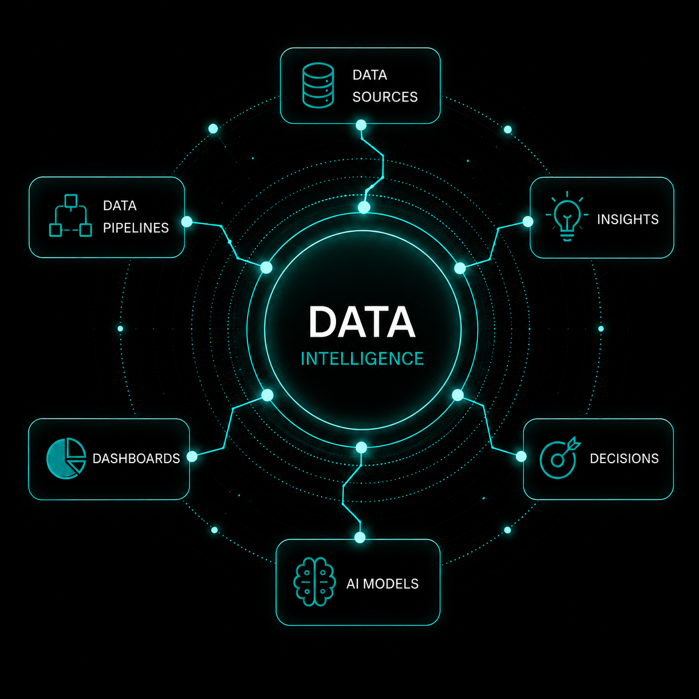

Helping organizations make smarter decisions through Business Intelligence, Analytics, and Data Storytelling. Using SQL, Power BI, Python, Excel, and UX research to turn complex data into meaningful insights.

“I help organizations answer their most important business questions through analytics, business intelligence and data storytelling ”
My career began in London's financial sector as a Presentation Designer at Credit Suisse First Boston, BNP Paribas and Texaco. Working with Adobe Creative Suite, PowerPoint and Excel, I transformed complex financial and technical information into high-impact presentations for senior stakeholders. It was here that I developed a passion for turning complex information into clear, compelling stories that support better business decisions.
After relocating to Portugal in 2002, I built a 20+ year international career in education, teaching across Portugal and Uganda in ESL and IB and IGCSE international school environments and earned a Bachelor of Science degree from the Open University in the UK, majoring in UX design. Alongside classroom teaching, I have spent six years as a Business English Trainer for multinational organisations, coaching managers, executives and global teams in the language of corporate communication. This experience has given me a deep understanding of stakeholder communication, cross-cultural collaboration and the information businesses need to make confident decisions.
Over the course of my education career, I have also worked extensively as a freelance proof editor, Portuguese-to-English translator and senior copywriter, creating content for international organisations and global brands. These roles strengthened my ability to communicate complex ideas with clarity, understand business objectives and translate technical information into messages that people can understand and act upon.
Today, I combine experience in finance, international education, corporate communication and business intelligence to build analytical solutions that are both technically robust and commercially relevant. Using SQL, Power BI, Python and Excel, I create dashboards, reports and data-driven insights that help organisations turn complex information into confident, evidence-based decisions.
Each project showcases the complete analytics process: from raw data and exploration to actionable insights and business recommendations. Explore my GitHub to view additional repositories, ongoing projects, and further examples of my work. Click here to visit my GitHub .
The report was developed as a conceptual analytics framework for Horizon Learning Labs (HLL), examining how learning, HR, finance, operational, QA, and learner engagement data could be unified into a scalable analytics ecosystem. Rather than focusing only on descriptive dashboard reporting, the framework explores how diagnostic, predictive, and eventually AI-driven analytics could support strategic decision-making:
GameCo was planning its 2017 marketing budget based on the assumption that regional sales patterns had remained stable over time. The objective of this analysis was to determine whether regional demand had shifted between 2006 and 2016 and to identify how marketing investment should be adjusted to maximize ROI. This project analyzed historical regional video game sales data to evaluate GameCo’s assumption that the global distribution of video game sales remained stable over time.
View on GitHubThis business intelligence project helps an online language learning company identify high-growth international markets using education, demographic, migration, and economic data. By integrating multiple global datasets with SQL and Power BI, the analysis reveals emerging language demand, evaluates market opportunities, and supports strategic decisions on expansion, product development, and corporate training investment..
This business intelligence project helps an online language learning company identify high-growth international markets using education, demographic, migration, and economic data. By integrating multiple global datasets with SQL and Power BI, the analysis reveals emerging language demand, evaluates market opportunities, and supports strategic decisions on expansion, product development, and corporate training investment..
This business intelligence project helps an online language learning company identify high-growth international markets using education, demographic, migration, and economic data. By integrating multiple global datasets with SQL and Power BI, the analysis reveals emerging language demand, evaluates market opportunities, and supports strategic decisions on expansion, product development, and corporate training investment..
This business intelligence project helps an online language learning company identify high-growth international markets using education, demographic, migration, and economic data. By integrating multiple global datasets with SQL and Power BI, the analysis reveals emerging language demand, evaluates market opportunities, and supports strategic decisions on expansion, product development, and corporate training investment..
Building a career in Business Intelligence and Data Analytics on a foundation of international experience in education, stakeholder communication, copywriting, translation, and Business English coaching.
Working with Me
I’m currently looking for Business Intelligence and Data Analyst roles across education, EdTech, SaaS and data-driven organisations. If you’re looking for someone who combines analytical thinking with stakeholder communication and business insight, let’s connect.
Send an Email